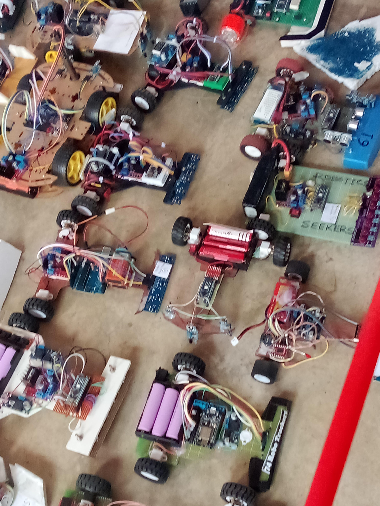

Participating in the National Robotics Championship 2025 (NRC 2025) at the Bangladesh University of Business and Technology (BUBT) in Dhaka was a major milestone for me. It was my very first robotics competition, and I entered the track alongside my batchmate, Adnan Hossain. The event took place at BUBT's outdoor sports complex, where energy, excitement, and innovation filled the open field as teams lined up their custom-built robots.
However, our maiden run didn't go as planned. Once our robot was placed on the field, it refused to move entirely. During indoor testing and preparation in the lab, our infrared (IR) sensors worked reliably. What we hadn't realized before competing outdoors was that natural sunlight contains high levels of infrared light, which completely overrides and saturates unshielded IR sensors. Because the track was set up in an open sports complex under direct sunlight, our robot was essentially blinded from the start.

Analyzing our setup after the trial, we realized a critical structural piece was missing: physical sensor shielding. We needed a protective front bracket around the IR sensors to block ambient sunlight and allow the photodiode to detect only the reflected signals from the track surface.
What I Learned
- Sunlight Interference on IR Sensors: Outdoor light conditions—like those at the open sports complex field—severely impair exposed IR sensors. Indoor testing is never sufficient for outdoor venues.
- Importance of Sensor Brackets: Mounting physical protective brackets in front of the sensors is essential to shade them from direct and reflected ambient sunlight.
- Building a Better Baseline: Failing at NRC 2025 became my biggest learning experience. Following this competition, I made it a strict rule to design and install protective sensor brackets on every bot I build for future competitions.